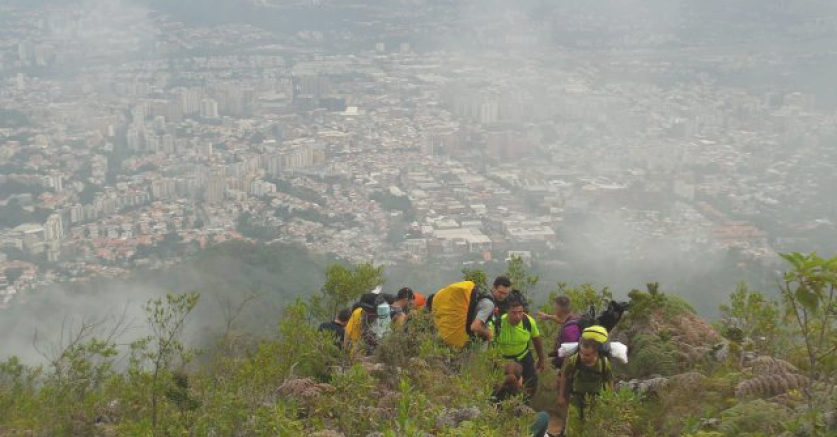

5,1km • Est. 2h 25min
Cupos disponibles: 9
Subida exigente hacia las torres de comunicación que coronan el cerro. El camino ofrece vistas contrastantes: hacia el sur, el skyline de Caracas; hacia el norte, el azul del Caribe. La vegetación cambia de bosque seco a matorrales altos, y es común ver halcones peregrinos sobrevolando las antenas.